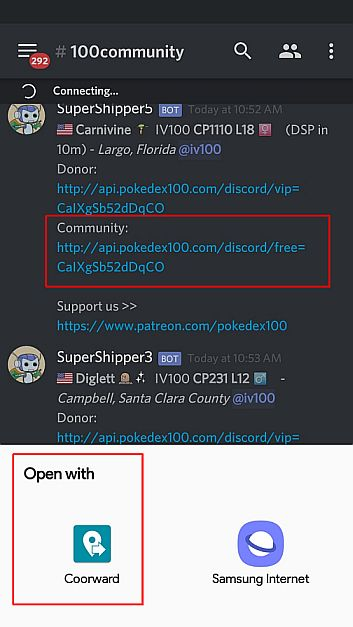

run app> tap SETTINGS (scroll down) or 3dots menu (upper right), tap select app to load after teleport (select POKEMON GO), enable automatically teleport, close app.
open discord app, go to pokedex100> 100community channel> click community coords link> open with: select Coorward > log-in to discord> authenticate> click community coords link again.

will show the coords page for a seconds with a warning "2 hrs cooldown" on screen.
will auto open pokemon go as it was already set in coorward or it will switch if it's already opened.
just switch between discord (to get coords) and pogo or use split screen.